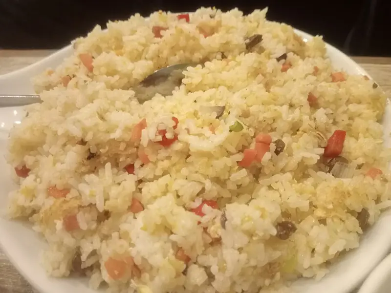

Фото: Ralff Nestor Nacor, CC BY-SA 4.0

Жареный рис с овощами по-домашнему
Вчерашний рис, обжаренный с морковью, перцем, луком и яйцом, без соевого соуса
20 мин3 порц.401 ккал на порциюБ 11 · Ж 15 · У 55Интернациональная кухня
Продукты на 3 порц.
- Рис варёный (остался)500 г
- Яйцо куриное2 шт
- Лук репчатый1 шт
- Морковь1 шт
- Перец болгарский1 шт
- Зелёный горошек по желанию80 г
- Растительное масло2 ст. л.
- Сливочное масло по желанию10 г
- Соль0,5 ч. л.
- Перец чёрный молотыйпо вкусу
- Укроп по желаниюпо вкусу
Как готовить
- Лук нарежьте кубиком, морковь натрите на крупной тёрке, перец нарежьте мелкими кубиками.
- В большой сковороде разогрейте масло на среднем огне и жарьте лук с морковью 5 минут до мягкости. Добавьте перец и горошек, жарьте 3 минуты.
- Сдвиньте овощи к краю, вбейте яйца в свободное место и быстро перемешайте, пока они не схватятся хлопьями, 1 минуту.
- Добавьте холодный рис, разбейте комки лопаткой. Прибавьте огонь до сильного и жарьте 5-6 минут, постоянно перемешивая, пока рис не прогреется и местами не подрумянится.
- Посолите, поперчите, добавьте кусочек сливочного масла и рубленый укроп.
Совет. Рис нужен именно холодный и вчерашний: свежесваренный слипнется в кашу. Подойдут любые остатки овощей и кусочки курицы или колбасы.